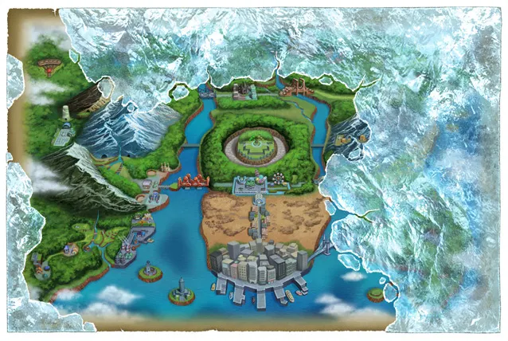

Historia
|
La trama se desarrolla en la región Teselia, la cual está basada en Nueva York. El recorrido por ciudad Porcelana es en 3D. En cualquier otro lugar, solo cambiará su perspectiva en casos como por ejemplo entrar en casas donde su entrada sea desde el lateral, de forma que la cámara cambiará su orientación para seguir nuestro movimiento. Lugares exclusivos para cada edición: Ciudad Negra y Bosque Blanco (ambos ocupan el mismo lugar en el mapa). Los centros Pokémon albergarán en su interior las tiendas Pokémon, pasando a ser un único elemento. Además, el edificio tendrá dos pisos. En el segundo se podrá usar la GTS. Las rutas, pueblos y ciudades cambiarán según la estación del año en la que se encuentre. Las rutas volverán a nombrarse desde el número 1, y dejarán de ser de trazado recto para ser más curvo. Se empezará la aventura en pueblo Arcilla. Ahora no todos los gimnasios son iguales con la forma clásica, sino que serán cada uno con una forma diferente, que será de la misma manera como el anime, y a la vez el gimnasio se adapta al tipo de Pokémon que tenga el líder del mismo. En determinadas rutas hay dos tipos de hierba, una más clara y otra más oscura. En las zonas de hierba oscura aparecerán Pokémon salvajes de mayor nivel o de dos en dos (en forma de combates dobles), o incluso evoluciones de los que aparecen en la hierba clara. En la Liga Pokémon, se podrá desafiar al Alto Mando no en orden (uno tras otro), como en las ediciones anteriores, sino que se podrá elegir subiendo las diferentes gradas. La región está unida por 5 grandes puentes. Estos son el Puente Saeta, el Puente de Fayenza, el Puente Axial, el Puente Villa y el Puente Progreso. |
 |
Pokémon Legendarios
 Zekrom — Pokémon del Ideal y la Electricidad
Zekrom — Pokémon del Ideal y la Electricidad